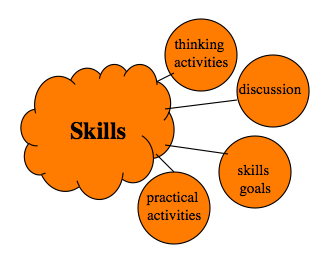

6.5 Desenvolvimento de habilidades


6.5.1 Habilidades em uma era digital
No Capítulo 1, Seção 1.2, listei algumas das competências de que os graduados necessitam na era digital e argumentei que, consequentemente, é necessário focar mais no desenvolvimento dessas competências, em todos os níveis de ensino, mas particularmente no nível pós-secundário, onde o foco incide frequentemente em conteúdos especializados. Embora competências como o pensamento crítico, a resolução de problemas e o pensamento criativo tenham sido sempre valorizadas no ensino superior, o mapeamento e o desenvolvimento de tais competências são frequentemente implícitos e quase acidentais, como se os estudantes fossem de algum modo adquirir estas competências observando os próprios docentes demonstrá-las ou através de uma espécie de osmose resultante do estudo dos conteúdos.
É, evidentemente, um pouco artificial separar o conteúdo das competências, porque o conteúdo é o combustível que impulsiona o desenvolvimento das competências intelectuais. O meu objetivo aqui não consiste em diminuir a importância do conteúdo, mas sim em assegurar que o desenvolvimento de competências receba o mesmo foco e atenção por parte dos professores, e que abordemos o desenvolvimento de competências intelectuais com o mesmo rigor e de forma tão explícita como se treinam os aprendizes em competências manuais.
6.5.2 Definindo objetivos para o desenvolvimento de competências
Assim, um passo crítico consiste em ser explícito sobre quais competências uma determinada disciplina ou programa está tentando desenvolver, e definir estes objetivos de modo a que possam ser implementados e avaliados. Em outras palavras, não basta dizer que uma disciplina visa desenvolver o pensamento crítico, mas sim definir claramente o que isso representaria no contexto da disciplina ou área de conteúdo específica, de forma clara para os estudantes. Em particular, as competências devem ser definidas de modo a poderem ser avaliadas, e os estudantes devem conhecer os critérios ou rubricas que serão utilizados para a avaliação. O desenvolvimento de competências é discutido ao longo do livro, mas particularmente no:
6.5.3 Atividades de reflexão
Estas incluem atividades que permitem aos estudantes praticar uma gama de competências, tais como o pensamento crítico, a resolução de problemas e a tomada de decisões. Uma competência não é binária, no sentido de se possuir ou não. Existe uma tendência para falar de competências e capacidades em termos de nível iniciante, intermediário, avançado e mestre, mas na realidade as competências exigem prática e aplicação constantes e não existe, pelo menos no que se refere às competências intelectuais, um destino final. Com a prática e a experiência, por exemplo, as nossas competências de pensamento crítico deverão ser muito melhores aos 65 anos do que aos 25 (embora alguns possam chamar a isso "sabedoria").
Um grande desafio ao longo de um programa completo consiste em assegurar uma progressão constante no nível de uma competência, de modo a que, por exemplo, as competências de pensamento crítico de um estudante sejam melhores quando este se formar do que quando iniciou o programa. Isto significa identificar o nível de competência que possuem antes de entrarem em uma disciplina, bem como avaliá-lo quando a concluem. Por isso, é criticamente importante, ao planejar um curso ou programa, conceber atividades que exijam que os estudantes desenvolvam, pratiquem e apliquem competências de reflexão de forma contínua, de preferência começando com pequenos passos e avançando gradualmente para desafios maiores.
Existem muitas formas através das quais as competências intelectuais podem ser desenvolvidas e avaliadas, tais como trabalhos escritos, projetos e discussões direcionadas, mas estas atividades de reflexão precisam de ser planejadas e depois implementadas de forma consistente pelo professor.
6.5.4 Atividades práticas
É ponto assente nos programas profissionalizantes que os estudantes necessitam de muitas atividades práticas para desenvolver as suas competências manuais. Contudo, isto é igualmente verdade para as competências intelectuais. Os estudantes precisam de ser capazes de demonstrar em que ponto se encontram no caminho para o domínio, receber feedback sobre isso e tentar novamente em consequência. Isto significa realizar trabalhos que lhes permitam praticar competências específicas.
No cenário de história (Cenário D), os estudantes tiveram de cobrir e compreender o conteúdo essencial nas primeiras três semanas, realizar pesquisa em grupo, elaborar um relatório de projeto consensual sob a forma de um e-portfólio, partilhá-lo com outros estudantes e com o professor para comentários, feedback e avaliação, e apresentar o seu relatório oralmente e on-line. Idealmente, terão a oportunidade de transferir muitas destas competências para outras disciplinas, onde estas poderão ser refinadas e desenvolvidas. Assim, com o desenvolvimento de competências, será necessário um horizonte temporal mais longo do que o de uma única disciplina, pelo que é importante um planejamento integrado do programa e das disciplinas.
6.5.5 A discussão como ferramenta para desenvolver competências intelectuais
A discussão constitui uma ferramenta muito importante para desenvolver competências de reflexão. No entanto, não um tipo de discussão qualquer. Argumentou-se no Capítulo 2 que o conhecimento acadêmico exige um tipo de reflexão diferente do pensamento cotidiano. Normalmente, exige que os estudantes vejam o mundo de forma diferente, em termos de princípios subjacentes, abstrações e ideias.
Assim, a discussão precisa de ser gerida cuidadosamente pelo professor, de modo a focar no desenvolvimento de competências de pensamento que sejam integrantes da área de estudo. Isto exige que o professor planeje, estruture e apoie a discussão na turma, mantendo os debates focados, proporcionando oportunidades para demonstrar de que forma os especialistas na matéria abordam os temas em debate e comparando os esforços dos estudantes. O papel da discussão é abordado de forma mais completa no Capítulo 3, Seção 4, no Capítulo 4, Seção 4 e no Capítulo 12, Seção 10.
6.5.6 Conclusão
Existem muitas oportunidades, mesmo nas disciplinas mais acadêmicas, para desenvolver competências intelectuais e práticas que se transferirão para o trabalho e atividades da vida na era digital, sem corromper os valores ou padrões da academia. Mesmo nos cursos profissionalizantes, os estudantes necessitam de oportunidades para praticar competências intelectuais ou conceituais, tais como a resolução de problemas, a comunicação e a aprendizagem colaborativa. No entanto, isto não acontecerá apenas através da transmissão de conteúdos. Os professores precisam:
- refletir cuidadosamente sobre quais competências exatas os seus estudantes necessitam;
- de que forma isso se articula com a natureza da matéria;
- o tipo de atividades que permitirão aos estudantes desenvolver e melhorar as suas competências intelectuais;
- de que forma fornecer feedback e avaliar essas competências, dentro do tempo e dos recursos disponíveis.
Trata-se de uma discussão muito breve sobre a forma e a razão pela qual o desenvolvimento de competências deve ser parte integrante de qualquer ambiente de aprendizagem.
Atividade 6.5 Desenvolvimento de habilidades
- Regressando ao cenário HIST 305, quais competências específicas Ralph Goodyear tentava desenvolver na sua disciplina?
- As competências desenvolvidas pelos estudantes no cenário de história são relevantes para a era digital?
- Esta seção tende a mudar a sua forma de pensar sobre o ensino da sua matéria, ou você já cobre o desenvolvimento de competências de forma adequada? Se considera que já cobre bem o desenvolvimento de competências, a sua abordagem difere da minha?
Para feedback sobre as duas primeiras perguntas, clique no podcast abaixo.
Um elemento de áudio foi excluído desta versão do texto. Você pode ouvi-lo on-line aqui: https://pressbooks.bccampus.ca/teachinginadigitalagev2/?p=370